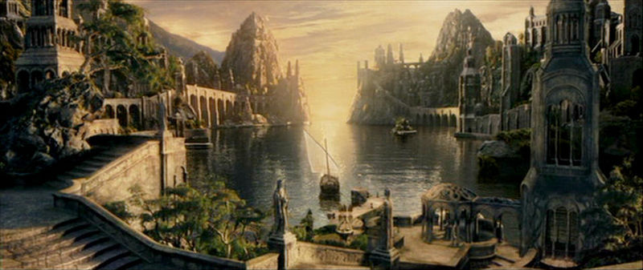

Enalalith
Last Harbor

Last Harbor
Enalalith, known in common tongue as Last Harbor, is the last island west of Arynsport that is known. We are a proud and ancient people, who have made this safe and beautiful island into a haven for our people.
Before recorded time, our fey ancestors came from Feywild and travelled the once watery world of the material plane. Some of these elves evolved and were able to breath underwater. They created the wonderous city of Sylt. Thousands of years passed, and Eldath, The Green Goddess and Mother of the Waters had pulled islands up out of the ocean for the ancestors of the Seledhel.
Our ancestors, the Sylt, grew curious about the surface world. Many grew to prefer the surface world, and began constructing the great city of Enalalith.
Sylt, the home of our ancestors, has been lost to us.
Virreau is the patriarch of this village and has lived a long and beautiful life. He has ruled over Enalalith for as longer than but a few can remember. His lovely wife, whose name has been forgotten as she is commonly refered to only as O'si, meaning mother, acts a mother to all Enalalith people, guiding them by providing advice and compassion. She passed away only 3 summers ago. Together, Virreau and O'si have had several beautiful children. The children have all left the island to seek knowledge and adventure, except for Yrashiae, mother of Virfaren. Yrashiae was the only child of Virreau's to have parished, having passed during child birth
Virfaren, the only known grandchild of Virreau is half human, half elf. His father is never spoken of. He is a strong warrior, and perhaps the sharpest mind of Enalalith.